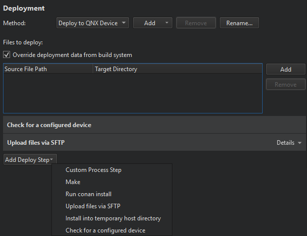

Deploying Applications to QNX Neutrino Devices
You can deploy applications to QNX Neutrino devices in the way that is described in Deploying Applications to Embedded Linux Devices.

The files to be installed are listed in the Deployment step, the Files to deploy field. The Local File Path field displays the location of the file on the development PC. The Remote Directory field displays the folder where the file is installed on the device. Text in red color indicates that the information is missing. Edit the qmake INSTALLS variable in the project .pro file to add the missing files.
When you run the application, Qt Creator copies the necessary files to the device and starts the application on it.